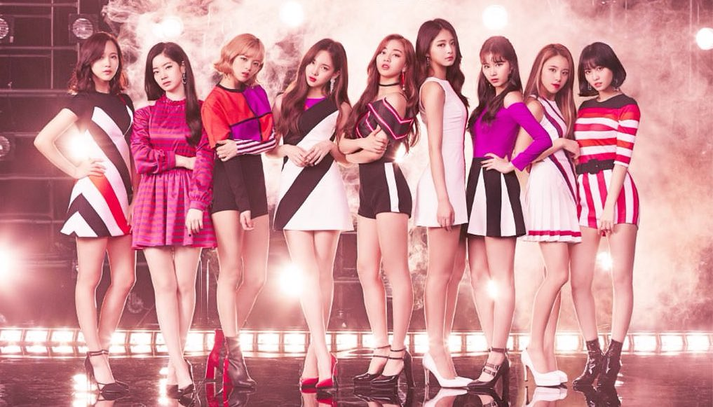

Twice - (Korean: 트와이스; Japanese: トゥワイス; stylized in all caps) is a South Korean girl group formed by JYP Entertainment through the 2015 reality show Sixteen. The group is composed of nine members: Nayeon, Jeongyeon, Momo, Sana, Jihyo, Mina, Dahyun, Chaeyoung, and Tzuyu.
The group debuted on October 20, 2015, with the extended play (EP) The Story Begins. Twice rose to fame in 2016 with their single "Cheer Up". The song charted at number 1 on the Gaon Digital Chart and became the best-performing single of the year. It also won "Song of the Year" at two major music awards shows—Melon Music Awards and Mnet Asian Music Awards. Their subsequent single "TT", from their third EP Twicecoaster: Lane 1, claimed the top spot for four consecutive weeks. The EP was the highest selling K-pop girl group album of 2016, which sold 350,852 copies by year-end. Within 19 months after debut, Twice has sold over 1.2 million units of their four EPs and special album. The group officially debuted in Japan on June 28, 2017, under Warner Music Japan with the release of their first compilation album titled #Twice. The album debuted at number 2 on the Oricon Albums Chart, which sold 136,157 copies within seven days, the highest first-week album sales of a K-pop artist in Japan in two years. It was followed by the release of Twice's first original Japanese maxi single titled "One More Time" in October. With over 250,000 unit sales, Twice became the first Korean girl group that earned Platinum certification by the Recording Industry Association of Japan (RIAJ) for both album and CD single in the same year. Twice ranked third in the Top Artist category of Billboard Japan's 2017 Year-End Rankings.
The group's name, Twice (stylized as TWICE), was named by the JYP Entertainment's founder Park Jin Young. He explained, Twice as "The group will touch people's hearts twice, once through the ears, and once again through the eyes."
TWICE is the Best Selling Korean Artist in Japan for 2019 According to Oricon Year End Sales Report
TWICE Politely Asks Fans to Stop Calling Them After Sasaeng Calls Chaeyoung
The Top 10 K-POP Girl Groups Of The past DECADE
TWICE Talks about Protecting their Dorm, Politely Asks Fans to Respect their Privacy
The top
10 best selling
artists in Korea in 2019
Billboard's 25 Greatest K-Pop Albums Albums of the Decade